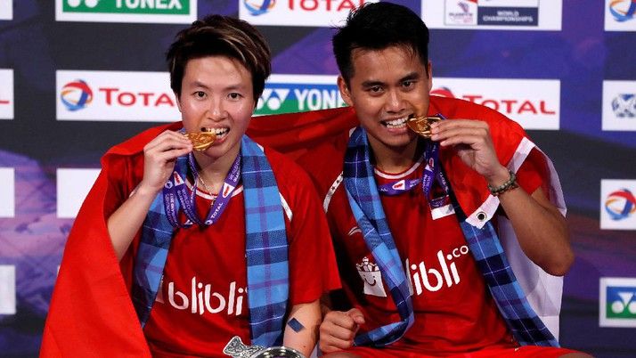

Tontowi/Liliyana Juara Dunia Bulutangkis 2017
 29 Agustus 2017 View: 1.000.000Tontowi Ahmad/Liliyana Natsir tampil sebagai juara di Kejuaraan Dunia Bulutangkis 2017. Mereka menunjukkan kematangan sebagai pasangan kelas dunia untuk meraih gelar juara. Menghadapi unggulan teratas sekaligus pasangan nomor satu dunia Zheng Siwei/Chen Qingchen di partai final yang digelar di Emirates Arena, Senin (28/8/2017) dini hari WIB, Tontowi/Liliyana harus bekerja keras...
Baca Selengkapnya...Tontowi/Liliyana Juara Dunia Bulutangkis 2017
29 Agustus 2017 View: 1.000.000Tontowi Ahmad/Liliyana Natsir tampil sebagai juara di Kejuaraan Dunia Bulutangkis 2017. Mereka menunjukkan kematangan sebagai pasangan kelas dunia untuk meraih gelar juara. Menghadapi unggulan teratas sekaligus pasangan nomor satu dunia Zheng Siwei/Chen Qingchen di partai final yang digelar di Emirates Arena, Senin (28/8/2017) dini hari WIB, Tontowi/Liliyana harus bekerja keras. Mereka bahkan sempat kehilangan gim pertama lebih dulu.
Baca Selengkapnya...Tontowi/Liliyana Juara Dunia Bulutangkis 2017
29 Agustus 2017 View: 1.000.000Tontowi Ahmad/Liliyana Natsir tampil sebagai juara di Kejuaraan Dunia Bulutangkis 2017. Mereka menunjukkan kematangan sebagai pasangan kelas dunia untuk meraih gelar juara. Menghadapi unggulan teratas sekaligus pasangan nomor satu dunia Zheng Siwei/Chen Qingchen di partai final yang digelar di Emirates Arena, Senin (28/8/2017) dini hari WIB, Tontowi/Liliyana harus bekerja keras. Mereka bahkan sempat kehilangan gim pertama lebih dulu.
Baca Selengkapnya...